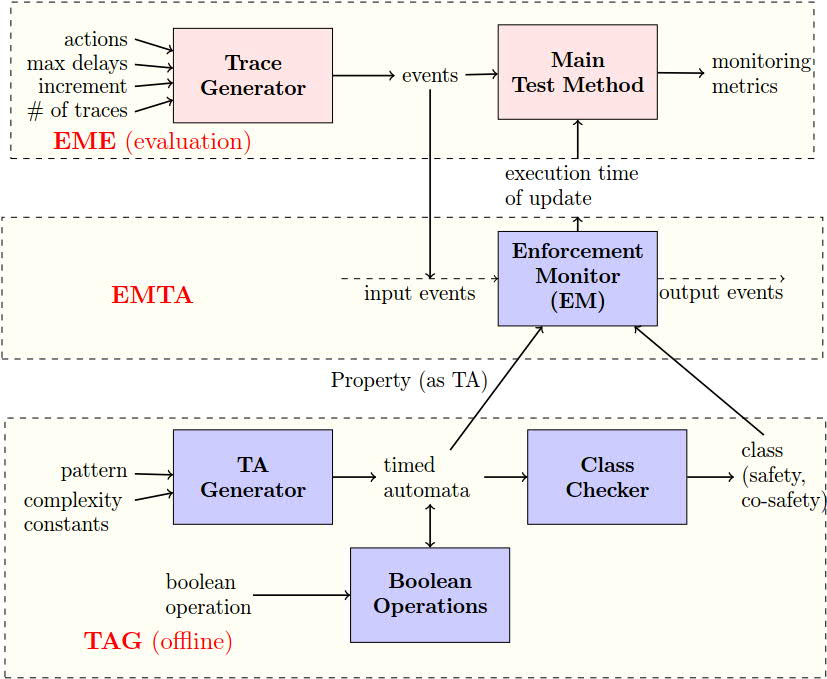

Documentation (EMTA+EME)
The EMTA+EME modules are implemented in Python. To implement EMTA, we use the libraries UPPAAL DBM, PYUPPAAL, DBMPYUPPAAL and PYDBM available for download at http://people.cs.aau.dk/~adavid/python/. Note that the EMTA+EME modules functionality is tested only on Linux (since we use some UPPAAL libraries that work on Linux platform). Configuration of the system used is: Intel Core i7-2720QM (4 cores) at 2.20GHz CPU, with 4 GB RAM, and running on Ubuntu 12.04.
Prerequisites:
- - Python
- - Install UPPAAL DBM, PYUPPAAL, DBMPYUPPAAL, and PYDBM. Inside the source code download (provided as .zip), these libraries are also provided in the directory "/UppaalLibraries", with a directory for each of these libraries inside (containing also their setup and README files), These are the libraries we used taken from http://people.cs.aau.dk/~adavid/python/.
- - Import the MainTest module.
- - Specify the property by indicating its path. "Example_Safety.xml" is the property in this example, which is a UPPAAL model stored as "xml" (Some more properties are also available in the directory "ExampleProperties").
- - Specify which locations are accepting in the input timed automaton. For instance, by typing accLoc=[`S1’, 'S2'], one specifies that the set of accepting locations in the input TA is {S1,S2}.
- - Specify the possible actions. For instance by typing actions = [`a’, 'r'] one specifies that the set of actions is {a,r}.
- - Define the range of possible delays.
- - Invoke the "testStoreProcess" method in the MainTest module, providing the following arguments in order:
- * Property
- * accepting locations
- * actions
- * delays
- * #traces
- * incr
The experimental framework used, is shown in the figure below.

The Main Test Method uses the module Trace Generator that provides a set of input traces,
to test the Enforcement Monitor (Store process).
The Trace Generator module takes as input the set of possible actions,
the range of delays, the number of traces,
and the increment in length per trace.
It returns a set of traces.
The Enforcement Monitor module takes as input a property and one trace, and returns the total execution
time of the update function to process the given input trace.
Some more explanation is available in the paper.
Testing output
Now, we will see an example of how we test the output trace (if it is as expected),
for a given input trace for some property.
We consider three example properties (that we used in the paper in the evaluation section).
We also provide the TAs defining these properties in UPPAAL format (.xml files).
To test the functionality, with these properties for some input traces,
simply run the test script "testFunctionality.py" (avaliable inside the source folder).
The image below shows the output.
Example_Safety.xml defines a safety property expressing that
There should be a delay of at least 5 t.u. between
any two request actions. As we can see in the above figure, the second "r" action in the input occurs after a delay of 1 time unit in the input,
but in the output the delay associated with this event is 5 time units (which is the minimal delay to satisfy the property).
Example_CoSafety.xml defines a co-safety property expressing that
A request should be immediately followed by a
grant, and there should be a delay of at least 7 t.u between them.
As we can see in the above figure, we have a request (R) action followed by a grant (G)
in the input, and the second action "G" is observed at 8 time units which is the delay associated with the first action
"R" in the output.
Example_Response.xml defines a regular property, but neither a
safety nor a co-safety property, and expresses that Resource
grant and release should alternate. After a grant, a request should
occur between 15 to 20 t.u.
Collecting performance data
Now, we will see an example of how the main test method is invoked via Python command line,
to collect performance data for a property (see figure below).
"#traces" is the number of traces we want to use for testing (3 in the example above), each trace varying is length, and "incr" is the increment in length per trace (1000 in the example above). As shown in the figure above, a list of triples(trace length, total execution time of the Update function, average time per call of the Update function) is returned as the result.